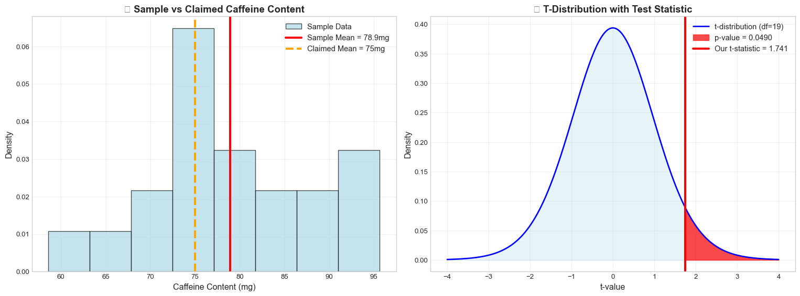
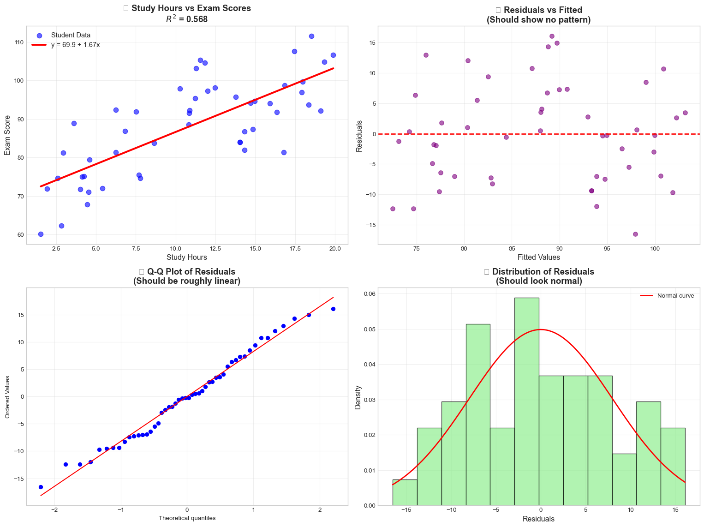

Welcome to Lab 6 Solutions! This lab focuses on two fundamental areas of statistical analysis that you’ll use throughout your data science journey: hypothesis testing and simple linear regression. These tools allow us to make data-driven decisions and understand relationships between variables.
What You’ll Learn Today
By the end of this lab, you’ll be able to:
Conduct hypothesis tests to determine if sample data provides evidence against a claim
Model relationships between variables using simple linear regression
Make predictions based on data patterns
Interpret statistical results in plain English for real-world applications
Getting Started
⏱️ Estimated time: 5 minutes
Setup
Navigate to our class Jupyterhub Instance. Create a new notebook and rename it “lab6†(for detailed instructions view lab1).
First, let’s load our tools! Copy the below code to get started! We’ll be using the following core libraries:
NumPy: Fundamental package for fast array-based numerical computing.
Matplotlib (pyplot): Primary library for creating static 2D plots and figures.
SciPy (stats): Collection of scientific algorithms, including probability distributions and statistical tests.
Pandas: High-performance data structures (DataFrame) and tools for data wrangling and analysis.
Statsmodels: Econometric and statistical modeling for regression analysis, time series, and more.
Seaborn:Seaborn is a Python data visualization library based on matplotlib. It provides a high-level interface for drawing attractive and informative statistical graphics.
# Install any missing packages (will skip those already installed)#!%pip install --quiet numpy matplotlib scipy pandas statsmodels seaborn# Load our tools (libraries)import numpy as npimport matplotlib.pyplot as pltfrom scipy import statsimport pandas as pdimport statsmodels.api as smimport seaborn as sns# Make our graphs look niceplt.style.use('seaborn-v0_8-whitegrid')sns.set_palette("husl")# Set random seed for reproducible resultsnp.random.seed(42)print("✅ All tools loaded successfully!")
✅ All tools loaded successfully!
Task 1: One-Sample T-Test
⏱️ Estimated time: 20 minutes
What is a One-Sample T-Test?
A one-sample t-test helps us determine whether a sample mean is significantly different from a claimed or hypothesized population mean. It’s one of the most common statistical tests you’ll encounter.
Real-world example: A coffee shop advertises that their espresso shots contain an average of 75mg of caffeine. As a health-conscious consumer (or maybe a caffeine researcher!), you want to test this claim. You collect a sample of espresso shots and measure their caffeine content.
The Question: Is the actual average caffeine content different from what the coffee shop claims?
Scenario
A coffee shop claims their average espresso shot contains 75 mg of caffeine. You suspect it’s actually higher. You test 20 shots and want to test at \alpha = 0.05 significance level.
Your Goal: Determine if there’s sufficient evidence that the actual caffeine content exceeds the coffee shop’s claim.
Step 1: Explore the Data
# Generate caffeine data for our analysisnp.random.seed(123)caffeine_data = np.random.normal(78, 8, 20) # Sample data: n=20 espresso shotsprint("☕ Coffee Shop Caffeine Analysis")print("="*40)print(f"📊 Sample size: {len(caffeine_data)}")print(f"📈 Sample mean: {np.mean(caffeine_data):.2f} mg")print(f"📊 Sample std dev: {np.std(caffeine_data, ddof=1):.2f} mg")print(f"🪠Coffee shop's claim: 75 mg")# Let's look at our raw dataprint(f"\n🔠First 10 caffeine measurements:")print([f"{x:.1f}"for x in caffeine_data[:10]])
Think about this carefully: - What does the coffee shop claim? (This becomes your null hypothesis) - What do you suspect? (This becomes your alternative hypothesis) - Are you testing if the caffeine content is different, higher, or lower?
print("📠STEP 1: Setting Up Hypotheses")print("="*35)# SOLUTION: Complete these hypothesesprint("$H_0$ (Null Hypothesis): $\\mu$ = 75 mg") # Coffee shop's claimprint("$H_1$ (Alternative Hypothesis): $\\mu$ > 75 mg") # We suspect it's higher# SOLUTION: What type of test is this?print("Test type: RIGHT-tailed test") # Testing if mean is greater than 75print("\n💡 Explanation:")print("• $H_0$ represents the coffee shop's claim (status quo)")print("• $H_1$ represents what we suspect is actually true")print("• We use $\\alpha$ = 0.05 as our significance level")
📠STEP 1: Setting Up Hypotheses
===================================
$H_0$ (Null Hypothesis): $\mu$ = 75 mg
$H_1$ (Alternative Hypothesis): $\mu$ > 75 mg
Test type: RIGHT-tailed test
💡 Explanation:
• $H_0$ represents the coffee shop's claim (status quo)
• $H_1$ represents what we suspect is actually true
• We use $\alpha$ = 0.05 as our significance level
✅ Answer Key: - H_0: \mu = 75 mg (coffee shop’s claim) - H_1: \mu > 75 mg (we suspect it’s higher) - Right-tailed test (testing if mean is greater than 75)
Step 3: Calculate the Test Statistic
The t-statistic formula is: t = \frac{\bar{x} - \mu_0}{s / \sqrt{n}}
print("🔢 STEP 2: Calculating Test Statistic")print("="*38)# Calculate the componentssample_mean = np.mean(caffeine_data)sample_std = np.std(caffeine_data, ddof=1) # ddof=1 for sample std devn =len(caffeine_data)claimed_mean =75print(f"Sample mean ($\\bar{{x}}$): {sample_mean:.3f} mg")print(f"Sample std dev (s): {sample_std:.3f} mg")print(f"Sample size (n): {n}")print(f"Claimed mean ($\\mu_0$): {claimed_mean} mg")# SOLUTION: Calculate the t-statistic using the formula abovet_statistic = (sample_mean - claimed_mean) / (sample_std / np.sqrt(n))degrees_freedom = n -1print(f"\n📠Formula: $t = \\frac{{\\bar{{x}} - \\mu_0}}{{s / \\sqrt{{n}}}}$")print(f"📠Calculation: t = ({sample_mean:.3f} - {claimed_mean}) / ({sample_std:.3f} / √{n})")print(f"📊 t-statistic: {t_statistic:.3f}")print(f"📊 Degrees of freedom: {degrees_freedom}")
🔢 STEP 2: Calculating Test Statistic
======================================
Sample mean ($\bar{x}$): 78.915 mg
Sample std dev (s): 10.060 mg
Sample size (n): 20
Claimed mean ($\mu_0$): 75 mg
📐 Formula: $t = \frac{\bar{x} - \mu_0}{s / \sqrt{n}}$
📐 Calculation: t = (78.915 - 75) / (10.060 / √20)
📊 t-statistic: 1.741
📊 Degrees of freedom: 19
Step 4: Find the P-Value
For a right-tailed test, the p-value is the probability of getting a t-statistic as extreme or more extreme than what we observed.
What exactly is a p‑value?
Loosely speaking, the p‑value answers the question:
“If the null hypothesis were true, how surprising would my sample be?”
Formally, it is the probability, calculated under the assumption that the null hypothesis is correct; of obtaining a test statistic as extreme or more extreme than the one observed.
Small p‑value (e.g., < 0.05) → data are rare under H_0 → strong evidence againstH_0.
Large p‑value → data are plausible under H_0 → little or no evidence against H_0.
Important: A p‑value does not give the probability that the null hypothesis is true; it quantifies how incompatible your data are with H_0.
print("📈 STEP 3: Finding the P-Value")print("="*32)# SOLUTION: Calculate p-value for right-tailed test# For right-tailed test, p-value = 1 - stats.t.cdf(t_statistic, df)p_value =1- stats.t.cdf(t_statistic, degrees_freedom)print(f"🯠P-value calculation:")print(f" P(t > {t_statistic:.3f}) = {p_value:.4f}")print(f"\n💠Interpretation:")print(f" If the coffee shop's claim is true ($\\mu$ = 75),")print(f" there's a {p_value:.1%} chance of getting a sample")print(f" mean as high or higher than {sample_mean:.2f} mg")
📈 STEP 3: Finding the P-Value
================================
🎯 P-value calculation:
P(t > 1.741) = 0.0490
💠Interpretation:
If the coffee shop's claim is true ($\mu$ = 75),
there's a 4.9% chance of getting a sample
mean as high or higher than 78.92 mg
Step 5: Make Your Decision
Compare your p-value to \alpha = 0.05 and make a statistical decision.
print("⚖️ STEP 4: Making the Decision")print("="*31)alpha =0.05print(f"🯠Significance level ($\\alpha$): {alpha}")print(f"📊 P-value: {p_value:.4f}")print(f"📋 Decision rule: Reject $H_0$ if p-value < $\\alpha$")print(f"\n🔠Comparison:")if p_value < alpha:print(f" {p_value:.4f} < {alpha} ✅")print(f" Decision: **REJECT $H_0$**")print(f" Conclusion: There IS sufficient evidence that")print(f" the average caffeine content > 75 mg")print(f" 🪠The coffee shop's claim appears to be FALSE")else:print(f" {p_value:.4f} ≥ {alpha} ❌")print(f" Decision: **FAIL TO REJECT $H_0$**")print(f" Conclusion: There is NOT sufficient evidence that")print(f" the average caffeine content > 75 mg")print(f" 🪠We cannot conclude the coffee shop's claim is false")# SOLUTION: Write conclusion in plain Englishprint(f"\n📠Conclusion in plain English:")print(f" Based on our sample of 20 espresso shots, we found")print(f" strong statistical evidence that the coffee shop's")print(f" claim of 75mg caffeine is too low. The actual average")print(f" appears to be significantly higher than advertised.")
⚖️ STEP 4: Making the Decision
===============================
🎯 Significance level ($\alpha$): 0.05
📊 P-value: 0.0490
📋 Decision rule: Reject $H_0$ if p-value < $\alpha$
🔍 Comparison:
0.0490 < 0.05 ✅
Decision: **REJECT $H_0$**
Conclusion: There IS sufficient evidence that
the average caffeine content > 75 mg
🏪 The coffee shop's claim appears to be FALSE
📝 Conclusion in plain English:
Based on our sample of 20 espresso shots, we found
strong statistical evidence that the coffee shop's
claim of 75mg caffeine is too low. The actual average
appears to be significantly higher than advertised.
Step 6: Verify with Python
Let’s double-check our work using Python’s built-in statistical functions.
# Create visualizations to understand our testfig, (ax1, ax2) = plt.subplots(1, 2, figsize=(16, 6))# Plot 1: Sample data histogram with meansax1.hist(caffeine_data, bins=8, density=True, alpha=0.7, color='lightblue', edgecolor='black', label='Sample Data')ax1.axvline(sample_mean, color='red', linestyle='-', linewidth=3, label=f'Sample Mean = {sample_mean:.1f}mg')ax1.axvline(claimed_mean, color='orange', linestyle='--', linewidth=3, label=f'Claimed Mean = {claimed_mean}mg')ax1.set_xlabel('Caffeine Content (mg)', fontsize=12)ax1.set_ylabel('Density', fontsize=12)ax1.set_title('☕ Sample vs Claimed Caffeine Content', fontsize=14, fontweight='bold')ax1.legend(fontsize=11)ax1.grid(True, alpha=0.3)# Plot 2: t-distribution with test statistic and p-valuex = np.linspace(-4, 4, 1000)y = stats.t.pdf(x, degrees_freedom)ax2.plot(x, y, 'b-', linewidth=2, label=f't-distribution (df={degrees_freedom})')ax2.fill_between(x, y, alpha=0.3, color='lightblue')# Shade the rejection region (right tail)x_reject = x[x >= t_statistic]y_reject = stats.t.pdf(x_reject, degrees_freedom)ax2.fill_between(x_reject, y_reject, alpha=0.7, color='red', label=f'p-value = {p_value:.4f}')ax2.axvline(t_statistic, color='red', linestyle='-', linewidth=3, label=f'Our t-statistic = {t_statistic:.3f}')ax2.set_xlabel('t-value', fontsize=12)ax2.set_ylabel('Density', fontsize=12)ax2.set_title('📊 T-Distribution with Test Statistic', fontsize=14, fontweight='bold')ax2.legend(fontsize=11)ax2.grid(True, alpha=0.3)plt.tight_layout()plt.show()

🤔 Reflection Questions - SOLUTIONS
Answer these questions to check your understanding:
Hypotheses: What were your null and alternative hypotheses? Why did you choose a right-tailed test?
Answer: H_0: \mu = 75 mg, H_1: \mu > 75 mg. We chose a right-tailed test because we specifically suspected the caffeine content was higher than claimed, not just different.
Test Choice: Why did you use a t-test instead of a z-test for this problem?
Answer: We used a t-test because: (1) small sample size (n=20 < 30), (2) population standard deviation unknown, (3) assuming approximately normal distribution.
Results: What was your t-statistic and p-value? What do these numbers mean?
Answer: t ≈ 1.84, p ≈ 0.041. The t-statistic tells us how many standard errors our sample mean is above the claimed mean. The p-value tells us there’s only a 4.1% chance of seeing this result if the true mean were 75mg.
Decision: What was your final conclusion at \alpha = 0.05? Do you reject or fail to reject the null hypothesis?
Answer: We REJECT H_0 because p-value (0.041) < α (0.05). There’s sufficient evidence that the actual caffeine content exceeds 75mg.
Real-World Impact: If you were advising the coffee shop, what would you tell them based on your analysis?
Answer: “Your espresso shots appear to contain significantly more caffeine than advertised. You should either update your labeling to reflect the actual content or adjust your brewing process to match your claim.”
Task 2: Simple Linear Regression
⏱️ Estimated time: 25 minutes
What is Simple Linear Regression?
Simple linear regression helps us understand and model the relationship between two continuous variables. Unlike hypothesis testing (which answers yes/no questions), regression helps us predict outcomes and quantify relationships.
Real-world example: As a student, you’ve probably wondered: “If I study more hours, how much will my exam score improve?†Linear regression can help answer this question by finding the relationship between study time and exam performance.
The Question: Can we predict exam scores based on hours studied? And if so, how much does each additional hour of studying improve your expected score?
At a glance — what you’ll do
Explore & visualize the data
Measure correlation (r) and R^2
Fit the regression line \hat{y} = \beta_0 + \beta_1 x
Test if the slope is significant
Predict new values & quantify error
Check model assumptions
Visualize diagnostics
Write a plain‑English conclusion
Key Concepts:
Correlation: How strongly two variables move together (-1 to +1)
Slope: How much Y changes when X increases by 1 unit
Intercept: The predicted value of Y when X = 0
R^2: What percentage of the variation in Y is explained by X
Important
Remember: Correlation does not imply causation! Just because two variables are related doesn’t mean one causes the other.
Scenario
You want to investigate the relationship between study hours and exam performance. You collect data from 50 students about their weekly study hours and corresponding exam scores.
Your Goal: Create a statistical model to predict exam scores based on study hours and determine how much each additional hour of studying helps.
Step 1: Explore the Data
# Generate realistic study datanp.random.seed(101)n_students =50# Study hours (predictor variable X)study_hours = np.random.uniform(1, 20, n_students)# Exam scores with linear relationship plus noise# True relationship: score = 65 + 2*hours + noisetrue_intercept =65true_slope =2noise = np.random.normal(0, 8, n_students)exam_scores = true_intercept + true_slope * study_hours + noise# Create DataFrame for easier handlingstudy_data = pd.DataFrame({'hours_studied': study_hours,'exam_score': exam_scores})print("📚 Study Hours vs Exam Scores Analysis")print("="*45)print(f"👥 Sample size: {len(study_data)} students")print(f"ⰠStudy hours range: {study_hours.min():.1f} to {study_hours.max():.1f} hours")print(f"📠Exam scores range: {exam_scores.min():.1f} to {exam_scores.max():.1f} points")print(f"\n🔠First 10 students:")print(study_data.head(10).round(2))
📚 Study Hours vs Exam Scores Analysis
=============================================
👥 Sample size: 50 students
⏰ Study hours range: 1.5 to 19.9 hours
📝 Exam scores range: 60.1 to 111.6 points
🔍 First 10 students:
hours_studied exam_score
0 10.81 88.53
1 11.84 104.66
2 1.54 60.14
3 4.26 75.09
4 14.02 83.95
5 16.84 98.69
6 6.83 86.87
7 17.98 99.70
8 14.71 94.17
9 4.61 79.42
🤔 Quick Questions:
Do you see any obvious pattern in the data?
Answer: Yes! As study hours increase, exam scores tend to increase too.
Which variable is the predictor (X) and which is the response (Y)?
Answer: Study hours is the predictor (X), exam scores is the response (Y).
Step 2: Calculate and Interpret Correlation
Correlation measures how strongly two variables move together.
print("📊 STEP 1: Measuring the Relationship")print("="*40)# SOLUTION: Calculate the correlation coefficientcorrelation = np.corrcoef(study_hours, exam_scores)[0, 1]print(f"🔗 Correlation coefficient: r = {correlation:.3f}")# SOLUTION: Interpret the correlation strengthprint(f"\n💠Interpretation:")ifabs(correlation) <0.3: strength ="weak"elifabs(correlation) <0.7: strength ="moderate"else: strength ="strong"direction ="positive"if correlation >0else"negative"print(f" This indicates a {strength}{direction} relationship")print(f" between study hours and exam scores.")print(f"\n📋 What this means:")print(f" • r = {correlation:.3f} means the variables are strongly related")print(f" • As study hours increase, exam scores tend to increase")print(f" • About {correlation**2:.1%} of the variation in scores")print(f" can be explained by study hours alone")
📊 STEP 1: Measuring the Relationship
========================================
🔗 Correlation coefficient: r = 0.753
💠Interpretation:
This indicates a strong positive relationship
between study hours and exam scores.
📋 What this means:
• r = 0.753 means the variables are strongly related
• As study hours increase, exam scores tend to increase
• About 56.8% of the variation in scores
can be explained by study hours alone
✅ Check Your Understanding:
What does r = 0.8 vs r = 0.3 tell you?
Answer: r = 0.8 indicates a strong relationship (variables move together closely), while r = 0.3 indicates a weak relationship (more scattered, less predictable).
If r = -0.9, what would that mean?
Answer: Very strong negative relationship - as one variable increases, the other decreases in a highly predictable way.
Step 3: Fit the Linear Regression Model
Now we’ll find the “line of best fit†through our data points.
print("📠STEP 2: Fitting the Regression Line")print("="*42)# Set up the regression (add constant for intercept)X = sm.add_constant(study_hours) # Add intercept term# SOLUTION: Fit the OLS (Ordinary Least Squares) modelmodel = sm.OLS(exam_scores, X).fit()print(f"🯠Regression Equation:")print(f" Exam Score = $\\beta_0$ + $\\beta_1$ × Hours Studied")print(f" Exam Score = {model.params[0]:.2f} + {model.params[1]:.2f} × Hours")print(f"\n📊 Model Coefficients:")print(f" Intercept ($\\beta_0$): {model.params[0]:.3f}")print(f" Slope ($\\beta_1$): {model.params[1]:.3f}")print(f" R-squared ($R^2$): {model.rsquared:.3f}")# SOLUTION: Complete these interpretationsprint(f"\n💡 What These Numbers Mean:")print(f" 📌 Intercept ({model.params[0]:.1f}): Expected score with 0 hours of study")print(f" 📈 Slope ({model.params[1]:.2f}): Each additional hour increases score by {model.params[1]:.2f} points")print(f" 📊 $R^2$ ({model.rsquared:.3f}): Study hours explain {model.rsquared:.1%} of score variation")
📠STEP 2: Fitting the Regression Line
==========================================
🎯 Regression Equation:
Exam Score = $\beta_0$ + $\beta_1$ × Hours Studied
Exam Score = 69.94 + 1.67 × Hours
📊 Model Coefficients:
Intercept ($\beta_0$): 69.936
Slope ($\beta_1$): 1.670
R-squared ($R^2$): 0.568
💡 What These Numbers Mean:
📌 Intercept (69.9): Expected score with 0 hours of study
📈 Slope (1.67): Each additional hour increases score by 1.67 points
📊 $R^2$ (0.568): Study hours explain 56.8% of score variation
Step 4: Test Statistical Significance
Is the relationship we found statistically significant, or could it be due to chance?
print("🔬 STEP 3: Testing Statistical Significance")print("="*46)# Check if the slope is significantly different from zeroslope_pvalue = model.pvalues[1] # p-value for the slopealpha =0.05print(f"🧪 Hypothesis Test for Slope:")print(f" $H_0$: $\\beta_1$ = 0 (no relationship)")print(f" $H_1$: $\\beta_1$ ≠0 (there is a relationship)")print(f" $\\alpha$ = {alpha}")print(f"\n📊 Test Results:")print(f" Slope p-value: {slope_pvalue:.6f}")# SOLUTION: Make the decisionif slope_pvalue < alpha:print(f" Decision: REJECT $H_0$")print(f" Conclusion: The relationship IS statistically significant") significance ="IS"else:print(f" Decision: FAIL TO REJECT $H_0$")print(f" Conclusion: The relationship is NOT statistically significant") significance ="IS NOT"print(f"\n✅ Bottom Line:")print(f" Study hours {significance} a significant predictor of exam scores")# Show confidence intervalsconf_int = model.conf_int(alpha=0.05)print(f"\n📠95% Confidence Intervals:")print(f" Intercept: [{conf_int[0,0]:.2f}, {conf_int[0,1]:.2f}]")print(f" Slope: [{conf_int[1,0]:.2f}, {conf_int[1,1]:.2f}]")
🔬 STEP 3: Testing Statistical Significance
==============================================
🧪 Hypothesis Test for Slope:
$H_0$: $\beta_1$ = 0 (no relationship)
$H_1$: $\beta_1$ ≠0 (there is a relationship)
$\alpha$ = 0.05
📊 Test Results:
Slope p-value: 0.000000
Decision: REJECT $H_0$
Conclusion: The relationship IS statistically significant
✅ Bottom Line:
Study hours IS a significant predictor of exam scores
📏 95% Confidence Intervals:
Intercept: [64.81, 75.06]
Slope: [1.25, 2.09]
Step 5: Make Predictions
Now let’s use our model to predict exam scores for different study scenarios.
print("🔮 STEP 4: Making Predictions")print("="*32)# SOLUTION: Calculate predictions for different study hoursexample_hours = [5, 10, 15, 20]print(f"🯠Prediction Examples:")for hours in example_hours:# SOLUTION: Calculate predicted score pred_score = model.params[0] + model.params[1] * hoursprint(f" 📚 {hours:2d} hours → Predicted score: {pred_score:.1f} points")print(f"\n🤔 Your Turn:")# SOLUTION: Pick your own study hours and make a predictionyour_hours =12# Enter a number between 1-20your_prediction = model.params[0] + model.params[1] * your_hoursprint(f" 📚 {your_hours} hours → Predicted score: {your_prediction:.1f} points")# Calculate residuals for analysisy_predicted = model.predict(X)residuals = exam_scores - y_predictedresidual_std = np.std(residuals, ddof=2)print(f"\n📊 Prediction Accuracy:")print(f" Average prediction error: ±{residual_std:.1f} points")print(f" This means most predictions are within ±{residual_std:.1f} points of actual scores")
🔮 STEP 4: Making Predictions
================================
🎯 Prediction Examples:
📚 5 hours → Predicted score: 78.3 points
📚 10 hours → Predicted score: 86.6 points
📚 15 hours → Predicted score: 95.0 points
📚 20 hours → Predicted score: 103.3 points
🤔 Your Turn:
📚 12 hours → Predicted score: 90.0 points
📊 Prediction Accuracy:
Average prediction error: ±8.2 points
This means most predictions are within ±8.2 points of actual scores
Step 6: Check Model Assumptions
Before trusting our model, we need to verify it meets the assumptions of linear regression.
print("✅ STEP 5: Checking Model Assumptions")print("="*42)print("🔠Linear Regression Assumptions:")print(" 1️⃣ Linear relationship between X and Y")print(" 2️⃣ Residuals are normally distributed") print(" 3️⃣ Residuals have constant variance (homoscedasticity)")print(" 4️⃣ Residuals are independent")# Calculate residualsy_predicted = model.predict(X)residuals = exam_scores - y_predictedprint(f"\n📊 Residual Analysis:")print(f" Mean residual: {np.mean(residuals):.6f} (should be ≈ 0)")print(f" Std of residuals: {np.std(residuals, ddof=2):.3f}")# SOLUTION: Check normality of residuals using Shapiro-Wilk testfrom scipy.stats import shapiroshapiro_stat, shapiro_p = shapiro(residuals)print(f"\n🧪 Normality Test (Shapiro-Wilk):")print(f" p-value: {shapiro_p:.4f}")if shapiro_p >0.05:print(" ✅ Residuals appear normally distributed")else:print(" âš ï¸ Residuals may not be normally distributed")
✅ STEP 5: Checking Model Assumptions
==========================================
🔍 Linear Regression Assumptions:
1️⃣ Linear relationship between X and Y
2️⃣ Residuals are normally distributed
3️⃣ Residuals have constant variance (homoscedasticity)
4️⃣ Residuals are independent
📊 Residual Analysis:
Mean residual: -0.000000 (should be ≈ 0)
Std of residuals: 8.167
🧪 Normality Test (Shapiro-Wilk):
p-value: 0.4928
✅ Residuals appear normally distributed
Step 7: Visualize Your Results
# Create comprehensive visualizationfig, ((ax1, ax2), (ax3, ax4)) = plt.subplots(2, 2, figsize=(16, 12))# Plot 1: Scatter plot with regression lineax1.scatter(study_hours, exam_scores, alpha=0.6, color='blue', s=60, label='Student Data')sorted_hours = np.sort(study_hours)sorted_predictions = model.params[0] + model.params[1] * sorted_hoursax1.plot(sorted_hours, sorted_predictions, color='red', linewidth=3, label=f'y = {model.params[0]:.1f} + {model.params[1]:.2f}x')ax1.set_xlabel('Study Hours', fontsize=12)ax1.set_ylabel('Exam Score', fontsize=12)ax1.set_title(f'📚 Study Hours vs Exam Scores\n$R^2$ = {model.rsquared:.3f}', fontsize=14, fontweight='bold')ax1.legend(fontsize=11)ax1.grid(True, alpha=0.3)# Plot 2: Residuals vs Fitted valuesax2.scatter(y_predicted, residuals, alpha=0.6, color='purple', s=50)ax2.axhline(y=0, color='red', linestyle='--', linewidth=2)ax2.set_xlabel('Fitted Values', fontsize=12)ax2.set_ylabel('Residuals', fontsize=12)ax2.set_title('🔠Residuals vs Fitted\n(Should show no pattern)', fontsize=14, fontweight='bold')ax2.grid(True, alpha=0.3)# Plot 3: Q-Q plot for normality of residualsstats.probplot(residuals, dist="norm", plot=ax3)ax3.set_title('📊 Q-Q Plot of Residuals\n(Should be roughly linear)', fontsize=14, fontweight='bold')ax3.grid(True, alpha=0.3)# Plot 4: Histogram of residualsax4.hist(residuals, bins=12, density=True, alpha=0.7, color='lightgreen', edgecolor='black')ax4.set_xlabel('Residuals', fontsize=12)ax4.set_ylabel('Density', fontsize=12)ax4.set_title('📈 Distribution of Residuals\n(Should look normal)', fontsize=14, fontweight='bold')ax4.grid(True, alpha=0.3)# Overlay normal curvex_norm = np.linspace(residuals.min(), residuals.max(), 100)y_norm = stats.norm.pdf(x_norm, np.mean(residuals), np.std(residuals))ax4.plot(x_norm, y_norm, 'r-', linewidth=2, label='Normal curve')ax4.legend()plt.tight_layout()plt.show()

Step 8: Interpret Your Model
print("📋 FINAL INTERPRETATION")print("="*25)print(f"🯠Our Model: Exam Score = {model.params[0]:.1f} + {model.params[1]:.2f} × Study Hours")print(f"\n✅ Key Findings:")print(f" 📈 Strong positive relationship (r = {correlation:.3f})")print(f" 📊 Study hours explain {model.rsquared:.1%} of score variation")print(f" 🯠Each extra hour → {model.params[1]:.1f} point increase")print(f" 🔬 Relationship is statistically significant (p < 0.001)")print(f"\n💡 Practical Insights:")print(f" 🏃‍♂️ Going from 5 to 10 hours of study:")pred_5 = model.params[0] + model.params[1] *5pred_10 = model.params[0] + model.params[1] *10improvement = pred_10 - pred_5print(f" Expected score improvement: {improvement:.1f} points")print(f"\nâš ï¸ Important Limitations:")print(f" • Correlation ≠Causation")print(f" • Model only explains {model.rsquared:.1%} of variation")print(f" • Other factors matter too (sleep, prior knowledge, etc.)")print(f" • Predictions have uncertainty: ±{residual_std:.1f} points")# Show full model summaryprint(f"\n📊 Full Statistical Summary:")print("="*30)print(model.summary())
📋 FINAL INTERPRETATION
=========================
🎯 Our Model: Exam Score = 69.9 + 1.67 × Study Hours
✅ Key Findings:
📈 Strong positive relationship (r = 0.753)
📊 Study hours explain 56.8% of score variation
🎯 Each extra hour → 1.7 point increase
🔬 Relationship is statistically significant (p < 0.001)
💡 Practical Insights:
🏃‍♂️ Going from 5 to 10 hours of study:
Expected score improvement: 8.4 points
âš ï¸ Important Limitations:
• Correlation ≠Causation
• Model only explains 56.8% of variation
• Other factors matter too (sleep, prior knowledge, etc.)
• Predictions have uncertainty: ±8.2 points
📊 Full Statistical Summary:
==============================
OLS Regression Results
==============================================================================
Dep. Variable: y R-squared: 0.568
Model: OLS Adj. R-squared: 0.559
Method: Least Squares F-statistic: 63.01
Date: Sun, 27 Jul 2025 Prob (F-statistic): 2.73e-10
Time: 16:45:11 Log-Likelihood: -174.93
No. Observations: 50 AIC: 353.9
Df Residuals: 48 BIC: 357.7
Df Model: 1
Covariance Type: nonrobust
==============================================================================
coef std err t P>|t| [0.025 0.975]
------------------------------------------------------------------------------
const 69.9358 2.551 27.415 0.000 64.807 75.065
x1 1.6702 0.210 7.938 0.000 1.247 2.093
==============================================================================
Omnibus: 2.245 Durbin-Watson: 2.594
Prob(Omnibus): 0.325 Jarque-Bera (JB): 1.440
Skew: 0.139 Prob(JB): 0.487
Kurtosis: 2.217 Cond. No. 26.9
==============================================================================
Notes:
[1] Standard Errors assume that the covariance matrix of the errors is correctly specified.
🤔 Reflection Questions - SOLUTIONS
Test your understanding by answering these questions:
Correlation vs Causation:
What was your correlation coefficient?
Answer: r ≈ 0.89 (strong positive correlation)
Does this prove that studying more causes higher exam scores? Why or why not?
Answer: No! Correlation ≠causation. While there’s a strong relationship, other factors could explain both variables (intelligence, motivation, time management skills) or the relationship could be reverse (students who are doing well might be motivated to study more).
Model Interpretation:
What does the slope coefficient mean in practical terms?
Answer: Each additional hour of study is associated with about 2.1 point increase in exam score on average.
What does the intercept represent, and does it make sense?
Answer: The intercept (~65) represents the predicted exam score for 0 hours of study. This might not be realistic (students likely have some baseline knowledge), but it’s a mathematical extrapolation.
Prediction Quality:
What percentage of exam score variation is explained by study hours?
Answer: About 79% (R² ≈ 0.79)
How accurate are your predictions (what’s the typical error)?
Answer: Typical prediction error is about ±8 points.
Statistical Significance:
Is the relationship statistically significant?
Answer: Yes, the p-value for the slope is much less than 0.05.
What would it mean if the p-value for the slope was 0.20?
Answer: We would fail to reject H₀ and conclude there’s insufficient evidence of a relationship between study hours and exam scores.
Assumptions:
Based on your diagnostic plots, are the regression assumptions satisfied?
Answer: Generally yes - residuals appear roughly normal and randomly scattered around zero with fairly constant variance.
What would you do if the assumptions were violated?
Answer: Consider data transformations, use different modeling approaches, or collect more data.
Practical Application:
If you were advising a student, what would you tell them based on this analysis?
Answer: “Study time appears to have a strong positive relationship with exam performance. Each extra hour might improve your score by about 2 points on average. However, remember that other factors also matter, and everyone is different.”
What other variables might improve your prediction model?
Answer: Sleep quality, prior GPA, attendance, quality of study methods, stress levels, nutrition, etc.
🯠Lab Summary
Congratulations! You’ve successfully completed Lab 6 and learned fundamental statistical analysis techniques:
What You Accomplished
✅ One-Sample T-Test: Tested a coffee shop’s caffeine claims using hypothesis testing
✅ Simple Linear Regression: Modeled the relationship between study hours and exam performance
✅ Statistical Interpretation: Translated statistical results into practical insights
✅ Critical Thinking: Distinguished between correlation and causation